Café servido na hora
Do coado da casa ao cappuccino, cada xícara sai na hora do pedido.
A Bisa Café é uma empresa especializada em café de alta qualidade, cafeteria, torrefação e moagem artesanal, criada para proporcionar uma experiência completa ao consumidor.
Venha viver essa experiência de perto, em Santo André, São Paulo.
A Bisa Café é uma empresa especializada em café de alta qualidade, cafeteria, torrefação e moagem artesanal, criada para proporcionar uma experiência completa ao consumidor.
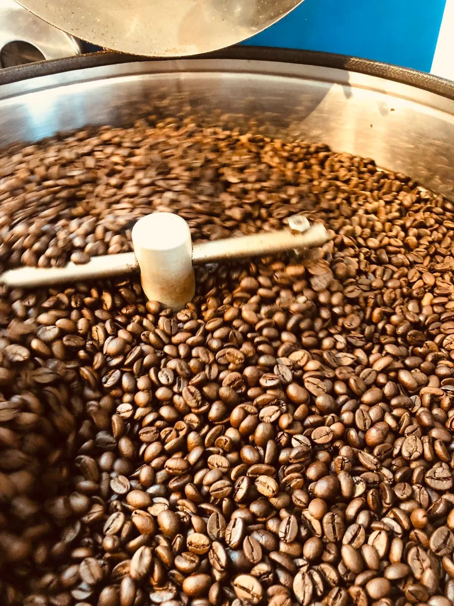
A marca nasceu com a proposta de aproximar as pessoas do verdadeiro café especial, valorizando a origem dos grãos, a torra adequada, a moagem correta, o preparo preciso, o atendimento humanizado, um ambiente acolhedor e a construção de relacionamentos duradouros com seus clientes.
Mais do que vender café, a Bisa Café oferece uma experiência sensorial que desperta memórias, promove encontros e cria vínculos emocionais. Do primeiro grão escolhido ao sorriso de quem atende, cada detalhe conta — e é isso que transforma uma simples pausa para o café em uma verdadeira experiência Bisa Café.
Inspirada pela tradição familiar, pelo respeito ao café brasileiro e pelo apoio aos pequenos produtores, a Bisa Café une gerações. Seu nome homenageia as descendentes da fundadora, Beatriz e Isabelle, trazendo a afetividade da figura da bisavó, símbolo de cuidado e acolhimento.
Ao harmonizar a essência do preparo artesanal com a eficiência da tecnologia, unimos tradição e inovação sem perder nossas raízes.
Nosso propósito: Transformar cada café em uma experiência memorável, oferecendo produtos de excelência, atendimento humanizado e ambientes pensados para o seu bem-estar e para a celebração da cultura do café.
Existimos para transformar o momento do café em uma experiência memorável. Nossa missão é oferecer cafés e alimentos de alta qualidade, preparados com rigor técnico, hospitalidade e conforto, promovendo o desenvolvimento sustentável de franqueados, colaboradores, fornecedores e da comunidade.
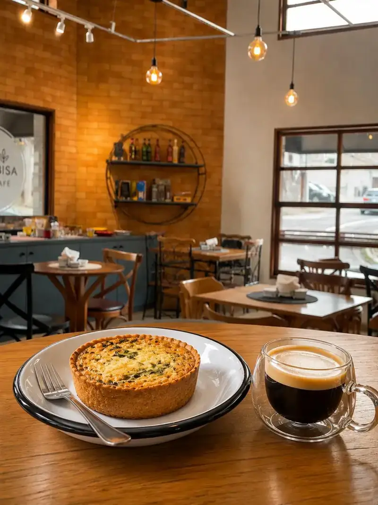
Nossas ações e decisões são guiadas diariamente pela busca constante por qualidade e excelência, aprimorando continuamente nossos processos, e pela prática da ética e do respeito através de ações transparentes, honestas e que valorizam todas as pessoas.
Além disso, pautamos nossa atuação na hospitalidade ao receber cada cliente como um convidado especial, no equilíbrio entre padronização e inovação ao respeitar os processos da rede enquanto evoluímos sem perder nossa identidade, e no compromisso com a sustentabilidade por meio de práticas responsáveis nos âmbitos ambiental, social e econômico.
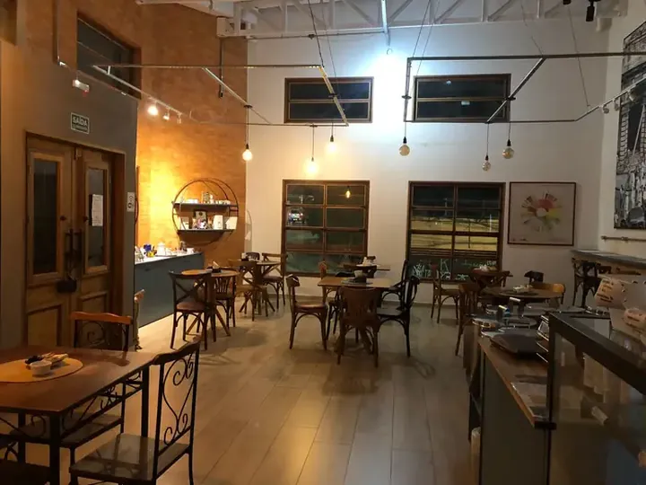
A Bisa Café acredita que o sucesso de uma cafeteria vai muito além do café servido, sendo construído pela união de fatores como atendimento cordial, ambiente agradável, limpeza impecável, organização, qualidade constante, agilidade, respeito ao cliente e elevado conhecimento técnico de toda a equipe.
Um café de bairro pra chamar de seu, tudo feito na hora egit add
aberto pra manhã de todo dia.Do coado da casa ao cappuccino, cada xícara sai na hora do pedido.
Ovos, pães e doces no mesmo cardápio, pra manhã render do jeito certo.
Para encontros com amigos e aniversário (consulte nossa disponibilidade).
Pertinho de quem mora e trabalha na região, fácil de chegar a pé ou de bike.
Uma amostra do balcão.
Doces feitos no dia, chás selecionados, bebidas especiais e café moído na hora.
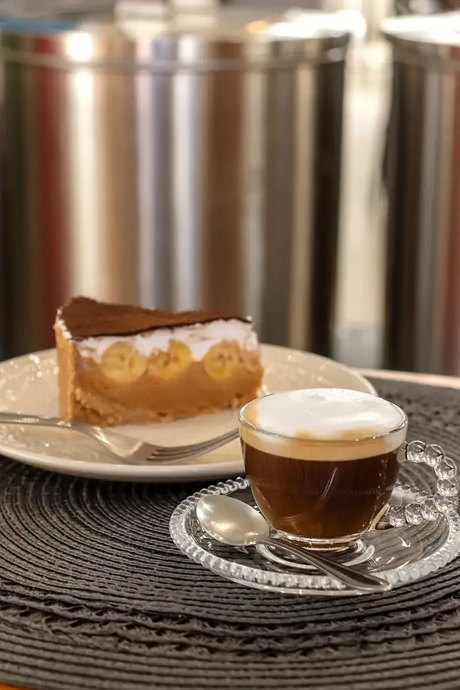
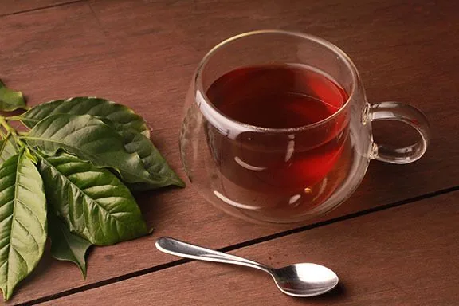
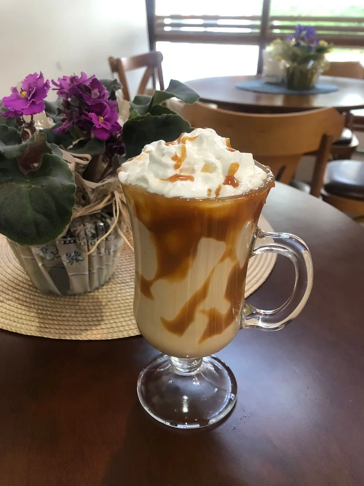
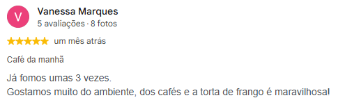
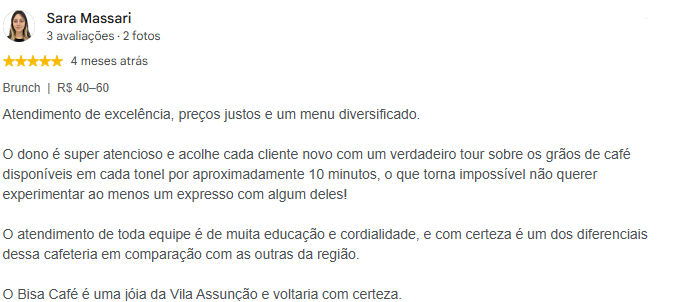
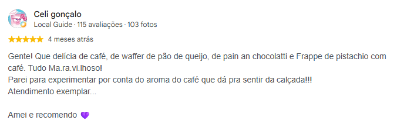
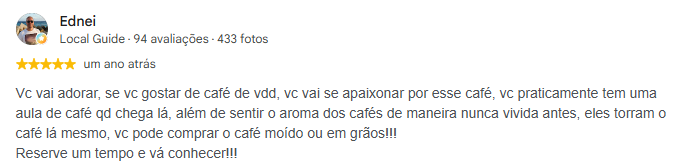
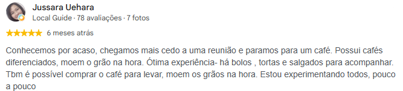
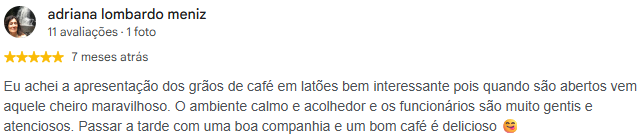
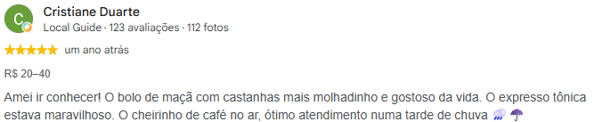
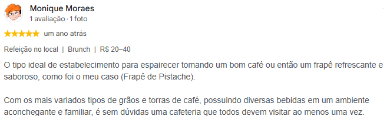
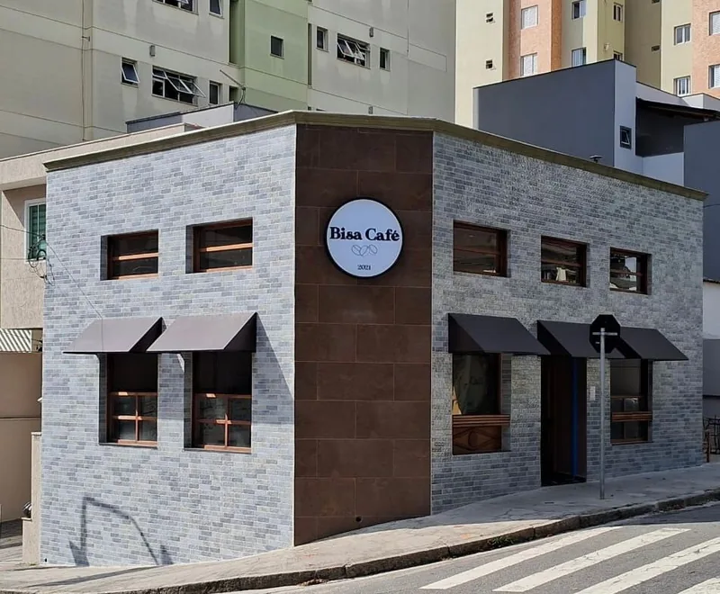
Rua Porto Alegre, 80 – Vila Assunção, Santo André – SP
Abrir no Google Maps